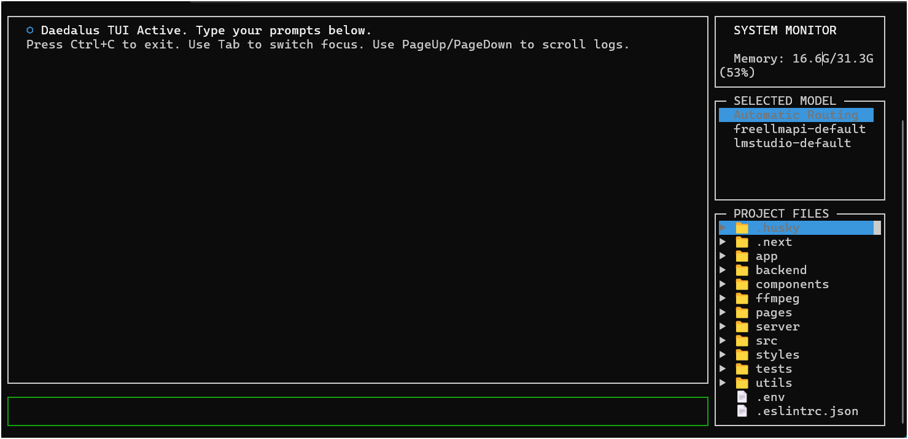

Daedalus
Local-first terminal-based AI coding assistant.
Daedalus connects to local LLM servers (LM Studio, Ollama, llama.cpp, vLLM) or remote providers (OpenAI, Groq, OpenRouter, Anthropic), routes requests across models, and gives your AI agent access to your file system, terminal, git, web search, and codebase indexing.
For full guides, configuration reference, and examples, visit the documentation site: https://bgill55.github.io/daedalus/
╔═══════════════════════════════════════════════════════════════════╗
║ ██████╗ █████╗ ███████╗██████╗ █████╗ ██╗ ██╗ ██╗███████╗║
║ ██╔══██╗██╔══██╗██╔════╝██╔══██╗██╔══██╗██║ ██║ ██║██╔════╝║
║ ██║ ██║███████║█████╗ ██║ ██║███████║██║ ██║ ██║███████╗║
║ ██║ ██║██╔══██║██╔══╝ ██║ ██║██╔══██╗██║ ██║ ██║╚════██║║
║ ██████╔╝██║ ██║███████╗██████╔╝██║ ██║███████╗╚██████╔╝███████║║
║ ╚═════╝ ╚═╝ ╚═╝╚══════╝╚═════╝ ╚═╝ ╚═╝╚══════╝ ╚══════╝ ╚══════╝║
║ ║
║ o local-first · embedded router · multi-agent · not sentient o ║
╚═══════════════════════════════════════════════════════════════════╝


Looking to build and sell your own AI CLI?
Check out Daedalus-Lite — the zero-dependency, rebrandable TypeScript starter template designed for developers to build, rebrand, and sell their own custom AI coding tools! Visit Daedalus-Lite →
Fun fact: Daedalus itself was built using Daedalus-Lite as a starting point, then extended with advanced features like multi-agent orchestration, codebase indexing, and autonomous workflows.
Quick Start
npm install -g daedalus-cli
daedalus
To launch with the interactive terminal dashboard layout:
daedalus --tui
On first run, Daedalus scans for local LLM servers and guides you through setup. If none are found, it prompts for a remote provider.
From source: git clone https://github.com/bgill55/daedalus.git && cd daedalus && npm install && npm run build
Why Daedalus?
AI assistance without:
- Sending your code to third-party servers
- Per-token pricing for every interaction
- Being locked into a single provider
- Losing conversation history between sessions
Features
Core
- Interactive Terminal Dashboard (TUI) — premium side-by-side dashboard with real-time CPU/RAM monitor gauges, model selection overrides, and an interactive file tree to toggle prompt context dynamically.
- Local-first — works entirely on your machine with local LLMs
- Embedded model router — priority, round-robin, or fastest-response routing across multiple models with real-time tokens-per-second (`tok/s`) stream telemetry, plus Multi-Model Fallback for zero-interruption auto-failover on rate limits (429) or 5xx errors.
- Smart model tier routing — routes planning, reviews, and context summarization calls to your configured `intelligence` tier model
- Multi-agent orchestration — spawns planner, coder, reviewer, debugger, and researcher sub-agents
- Autonomous Finn Loop — interactive requirements gathering (`/spec`), GitHub Issues tracking, background daemon execution (`daedalus --loop`), and Discord PR review webhook embeds.
- Loop Engineering & Self-Repair — automatic stack-aware compile/build verification checks (e.g., `npx tsc --noEmit`, `cargo check`, `go build`) with dynamic stdout/stderr feedback loops for self-repair, Automated Workspace Rollback to revert patches upon task failure, and Git-Aware Smart Testing (`/test -g`) to run only affected unit tests in < 200ms.
- Codebase indexing & Live Watcher — FTS5-powered symbol search, definitions, and call-graph references across 10+ languages with background Live File-Watcher (`/watch`) for automatic re-indexing on save.
- MCP Marketplace & Explorer (`/mcp explore`) — Model Context Protocol server marketplace with one-click installation (`/mcp install `) via stdio and HTTP/SSE.
- Stack-aware prompting — automatically scans your project tech stack on startup to prevent library and platform boundary hallucinations
- Dynamic task checklist — injects the active todo list into each prompt turn to maintain execution context
- Session management — SQLite-backed history with save, load, JSONL export
- Persistent memory — facts and coding conventions auto-inject every turn; `/profile` and `/style` persist across sessions
- Cursor & Claude Code Compatibility — automatically detects and inherits instructions from `CLAUDE.md`, `.cursorrules`, and `.daedalusrules` files in the project root on startup.
Developer API Reference
For detailed TypeScript API documentation showing all exported classes, functions, and modules, see the Auto-generated API Reference.
Detailed Documentation Guides
For in-depth explanations, configuration options, and hardware optimization tips, see the modular guides below:
- Model Routing & Tuning Guide — Endpoints, failover chains, routing strategy configs, and GPU/LM Studio tuning recommendations.
- Multi-Agent Orchestration — Overview of the planning, coding, and review loops, recovery checkpoints, and background task runners.
- Autonomous Finn Loop — Interactive requirements specification, GitHub issue tracking, background daemon execution, and Discord webhook notifications.
- Execution Sandboxing — Running commands inside isolated Docker containers or WSL distributions.
- Model Context Protocol (MCP) Integration — Configuring stdio and HTTP/SSE servers to expand your agent's capabilities.
- Configuration Reference Guide — Reference list of all global configuration keys (`router.*`, `agents.*`, `tools.*`, `ui.*`, etc.).